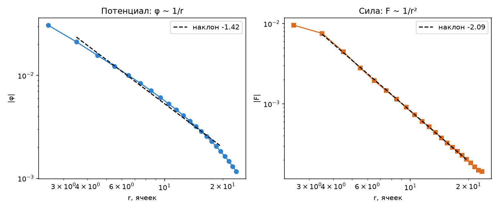
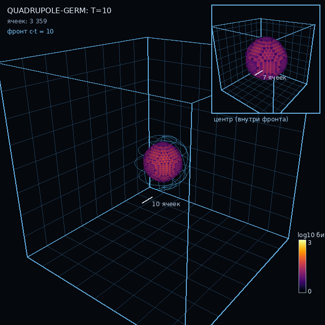
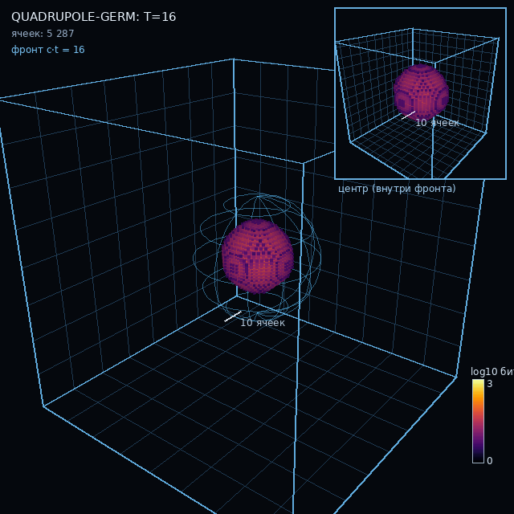
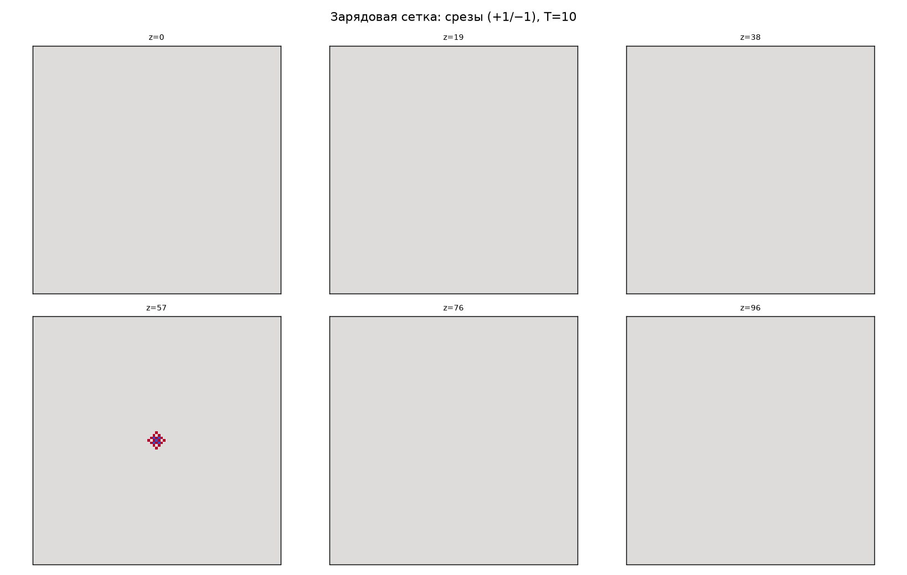
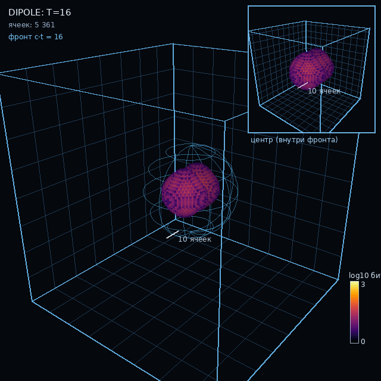
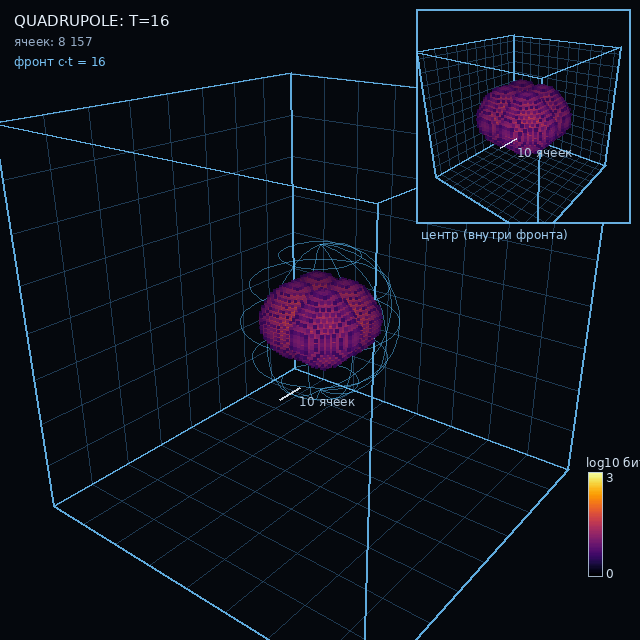

Два сорта бит — p (+1) и n (−1). Поле φ считается из зарядовой плотности решением уравнения Пуассона; p дрейфует вниз по φ, n — вверх. Получаются блобы, доменная сетка внутри блоба и сила, близкая к 1/r². Это честная попытка найти одно правило со всеми тремя свойствами — с оговорками, которые важнее красоты картинки.
Клетка хранит два счётчика: p и n. Их сумма сохраняется. Зарядовая плотность ρ = (p − n)/N; поле — решёточное решение ∇²φ = −ρ (FFT). Затем клетка делит p и n по шести направлениям с весами
β — сила кулоновского дрейфа, γ — короткодействующее притяжение к плотности (обменное). Доли целочисленные, остаток остаётся в клетке; p и n сохраняются по отдельности. Обмен p↔p и n↔n между соседями добавляет перемешивание.
Один положительный заряд в центре, 16 млн бит. Радиальные профили φ(r) и |F| = |−dφ/dr| в лог-лог масштабе:

Проверка честная: критерий −1 ± 0.2 для потенциала не выполнен (FAIL), критерий −2 ± 0.35 для силы выполнен. Именно сила — то, что действует на биты, и она кулоновская.
Зародыш — компактный блок 5³ с чередующимися знаками (шахматка). Кулоновское притяжение сжимает его в блоб, но внутри сохраняется решётка чередующихся зарядов — доменная сетка. На срезах видны полосы +/−; это и есть «сетеподобная» структура, хотя и не разреженный филаментный каркас.
| прогон | P | N | клеток | blob | network | стенки | wall network |
|---|---|---|---|---|---|---|---|
checker-T6 | 8 064 000 | 7 936 000 | 2 085 | 0.92 | 0.12 | 0.30% | 0.11 |
checker-T10 | 8 064 000 | 7 936 000 | 3 359 | 0.92 | 0.11 | 0.42% | 0.42 |
checker-T16 | 8 064 000 | 7 936 000 | 5 287 | 0.93 | 0.09 | 0.39% | 0.49 |
checker-T24 | 8 064 000 | 7 936 000 | 8 169 | 0.94 | 0.08 | 0.58% | 0.48 |
dipole-T16 | 8 000 000 | 8 000 000 | 5 361 | 0.77 | 0.09 | 0.32% | 0.55 |
quadrupole-T16 | 8 000 000 | 8 000 000 | 8 157 | 0.93 | 0.09 | 0.54% | 0.55 |





Это согласуется с интуицией: обменное взаимодействие даёт ближний порядок и блобы, а кулоновское поле — дальнодействие; для сети нужны оба масштаба и третий — жёсткость, запрещающая коллапс.
| Проверка | Статус | Значение |
|---|---|---|
| во всех прогонах P+N = 16 000 000 | PASS | [16000000] |
| потенциал ~ 1/r (наклон −1 ± 0.2) | FAIL | -1.42 |
| сила ~ 1/r² (наклон −2 ± 0.35) | PASS | -2.09 |
| доменная сетка существует (wall network > 0.4) | PASS | 0.55 |
| есть блобы | PASS | 0.94 |
| картинки созданы | PASS | True |
src/ca3d_coulomb.py — p/n, Пуассон, дрейф, обменscripts/run_ca3d5.py — 6 прогонов, results/ca3d5/report.jsonscripts/build_ca3d5_report.pyЧасти 1–4: инфляционная решётка, сети и блобы, консервативный битовый автомат, 16 млн бит, обмен и кости.